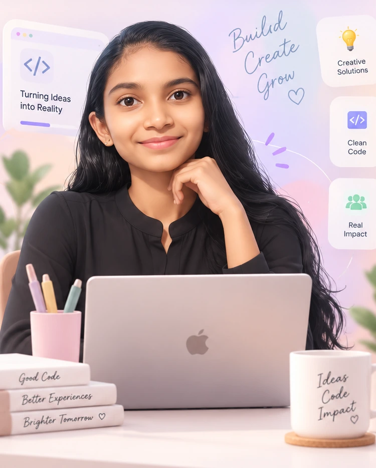

web experience
AluminiWave
An alumni-student engagement platform connecting mentorship, events, and community.
HELLO THERE 👋
Software Developer &
Creative Technologist
I build elegant, user-friendly digital experiences that solve real problems. Exploring the space where code meets thoughtful design.

✦ WELCOME TO MY LITTLE CORNER
I'm a software developer who cares about how things work and how they feel. I love simple solutions, warm visuals, and turning a small idea into something useful.
✦ SELECTED DEVELOPMENT WORK
An alumni-student engagement platform connecting mentorship, events, and community.
A responsive React experience for exploring and reading news.